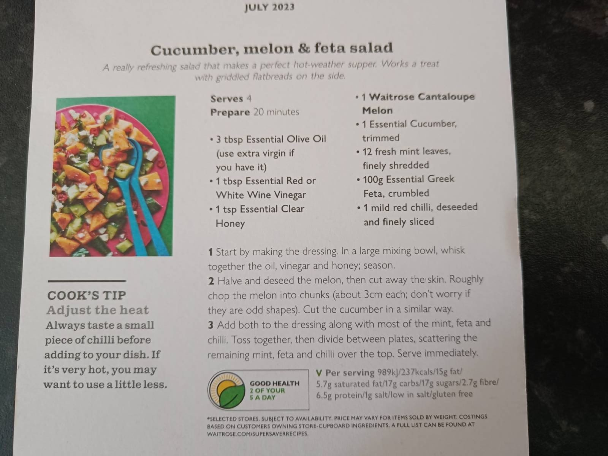

Cucumber, Melon & Feta Salad
A really refreshing salad that makes a perfect hot-weather supper. Works a treat with griddled flatbreads on the side.

Ingredients
Method
- Start by making the dressing. In a large mixing bowl, whisk together the 3 tbsp olive oil, 1 tbsp wine vinegar and 1 tsp honey; season.
- Halve and deseed the 1 cantaloupe melon, then cut away the skin. Roughly chop the melon into chunks (about 3cm each; don't worry if they are odd shapes). Cut the 1 cucumber in a similar way.
- Add both to the dressing along with most of the 12 mint leaves, 100g feta and 1 red chilli. Toss together, then divide between plates, scattering the remaining mint, feta and chilli over the top. Serve immediately.
Notes
Cook's tip — adjust the heat: always taste a small piece of chilli before adding to your dish. If it's very hot, you may want to use a little less.
Source: Waitrose, July 2023